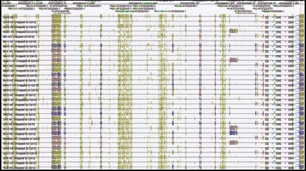
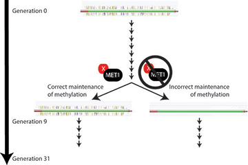
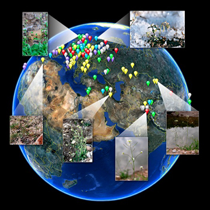

We are interested in determining how phenotypic variation is driven by natural and spontaneous epigenetic variation. Recent advances in genomic technologies are enabling acquisition of sequence-level data at an unprecedented rate and resolution. As a result, genomes for thousands of individuals are being analyzed to determine the total genetic variation present within a species and to determine the impact these variants have on phenotypic variation. Missing from these efforts is the identification of environmentally induced, spontaneous and natural epigenetic alleles (epialleles).
We apply epigenomic approaches to populations to study the impact that epialleles have on life history traits and to understand their role in establishing responses to the environment. These epialleles are often associated with changes in their DNA methylation status making their identification possible. Systematically identifying these epialleles, understanding their patterns of heritability, their interaction with genetic variants and their specific roles in controlling gene expression is necessary for a comprehensive understanding of phenotypic variation.
We apply epigenomic approaches to populations to study the impact that epialleles have on life history traits and to understand their role in establishing responses to the environment. These epialleles are often associated with changes in their DNA methylation status making their identification possible. Systematically identifying these epialleles, understanding their patterns of heritability, their interaction with genetic variants and their specific roles in controlling gene expression is necessary for a comprehensive understanding of phenotypic variation.

Natural variation of DNA methylation in a population of Arabidopsis thaliana.
Above is a representative image from a genome browser displaying whole-genome bisulfite sequencing data.
We are also applying epigenomic profiling methods to discover non-coding regulatory elements across numerous plant species. These methods include genome-wise assays to functionally evaluate identified regions using both gain-of-function and loss-of-function approaches. With advances in genome-editing technologies we are beginning to engineer non-coding regulatory elements as well as to use identified sequences to create modular units that can be used to drive transgene expression in a predictable manner.

Combining nuclei sorting with ATAC-seq reveals regions of chromatin accessibility and candidate cis-regulatory elements in plant genomes. The distance of accessible chromatin and their associated cis-regulatory elements to their nearest genes is greater in plants with larger genomes.
Epigenetics

Population Epigenomics

1. methylQTL
Genome-wide association studies (GWAS) is a powerful approach for identifying the genetic basis for phenotypic variation within large populations. We are interested in understanding how epialleles for in natural populations and to accomplish this goal we have used GWAS to map causal loci for variation in DNA methylation which we refer to as methylQTL. Understanding the types of genetic variants that can give rise to methylation variants is a major focus of our lab.
2. EpiGWAS
EpiGWAS is a variation of traditional GWAS that uses methylation polymorphisms as markers to test for association with a particular phenotype as opposed to the traditional approach which utilizes DNA polymorphisms. We are applying EpiGWAS to populations of plants to determine how much phenotypic variation results from DNA methylation polymorphisms.
3. Comparative Epigenomics
We are using comparative epigenomic approaches to understand both the variable and also the invariable portions of epigenomes by profiling DNA methylomes, histone tail modifications and RNAs from a variety of flowering plant species. Understanding why certain genes and gene families are hypervariably targeted by DNA methylation is important for revealing common functions in key biological processes.